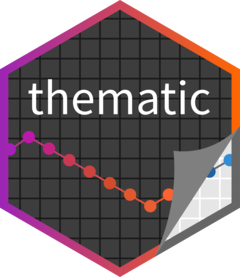
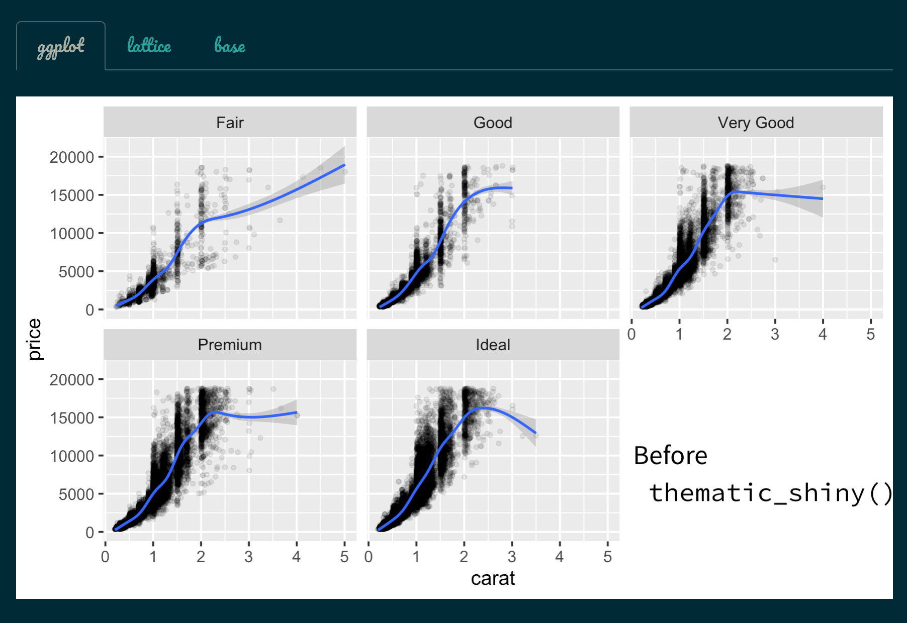
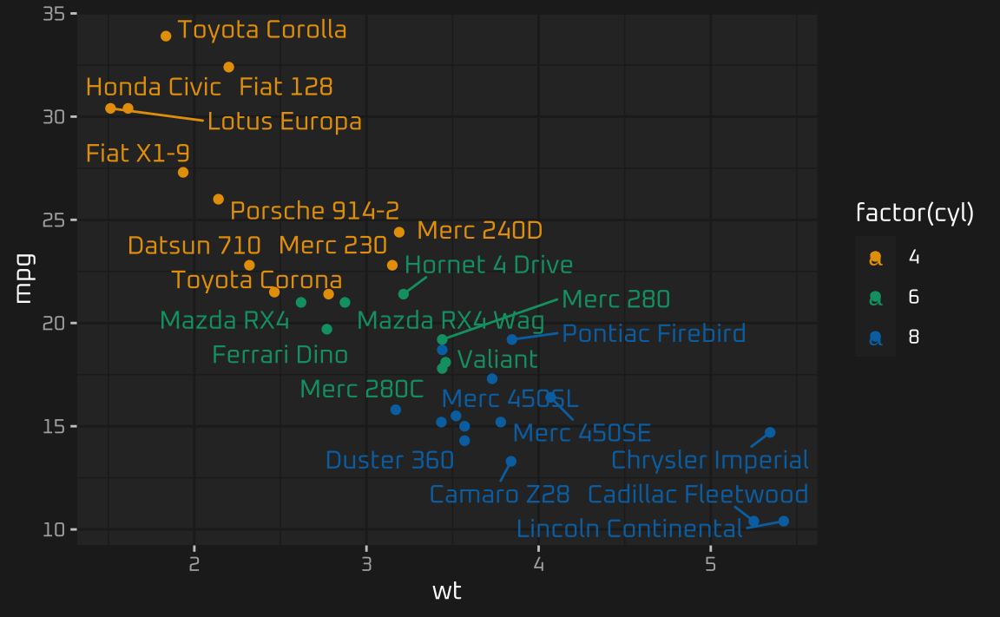

thematic 
Simplified theming of ggplot2, lattice, and base R graphics. In addition to providing a centralized approach to styling R graphics, thematic also enables automatic styling of R plots in Shiny, R Markdown, and RStudio.
Installation
thematic is not yet available on CRAN, but you can install it now with:
remotes::install_github("rstudio/thematic")
library(thematic)For auto theming in Shiny, you’ll need shiny v.1.5.0 or higher.
install.packages("shiny")For auto theming in R Markdown, you’ll currently need an experimental version of rmarkdown:
remotes::install_github("rstudio/rmarkdown#1706")Overview
thematic’s auto theming gives R plots the ability to style themselves inside Shiny (via CSS), R Markdown (via bslib), and RStudio (via RStudio themes). For a quick example, here’s a shiny::tabsetPanel() with custom CSS styling, but default R styling:
library(shiny)
library(ggplot2)
library(bslib)
ui <- fluidPage(
theme = bs_theme(
bg = "#002B36", fg = "#EEE8D5", primary = "#2AA198",
base_font = font_google("Pacifico")
),
tabsetPanel(
type = "pills",
tabPanel("ggplot", plotOutput("ggplot")),
tabPanel("lattice", plotOutput("lattice")),
tabPanel("base", plotOutput("base"))
)
)
server <- function(input, output) {
output$ggplot <- renderPlot({
ggplot(mtcars, aes(wt, mpg, label = rownames(mtcars), color = factor(cyl))) +
geom_point() +
ggrepel::geom_text_repel()
})
output$lattice <- renderPlot({
lattice::show.settings()
})
output$base <- renderPlot({
image(volcano, col = thematic_get_option("sequential"))
})
}
thematic_shiny()
shinyApp(ui, server)
To add automatic coloring and fonts (i.e., the full auto theming experience) to the R plots, simply call thematic_on(font = "auto") and re-run the application. Since the plots are generated via Shiny, they assume new defaults which are informed by the CSS styling on their HTML container (that is, notice how the R plots now reflect the styling of the shiny::tabsetPanel()). Moreover, as long as the relevant font is a Google Font (in this case, Pacifico), thematic automatically downloads, caches, and registers font(s) with R.
thematic_shiny(font = "auto")
shinyApp(ui, server)
Instead of relying on thematic to automatically detect colors and fonts in the plot’s container, you can also specify them directly in thematic_on().
thematic_on(bg = "#222222", fg = "white", accent = "#0CE3AC", font = "Oxanium")
library(ggplot2)
ggplot(mtcars, aes(wt, mpg, label = rownames(mtcars), color = factor(cyl))) +
geom_point() +
ggrepel::geom_text_repel()
In addition to thematic_on(), which applies the provided theme to all plots (up until thematic_off() is called), there are a few variation of thematic_on() which temporarily apply the given theme:
-
thematic_shiny(): apply theme up until the next Shiny app exits. Use this overthematic_on()in Shiny apps. -
thematic_rmd(): apply theme up until the next R Markdown document exits. Use this overthematic_on()in R Markdown documents. -
thematic_with_theme(): apply theme up until the provided plotexpris evaluated. Use this to apply different themes to different plots within a Shiny app.
Learn more
- See the auto theming article to gain an understanding of how auto theming make styling R plots easier in Shiny, R Markdown, and RStudio.
- See the custom themes article for more on thematic’s theming options as well as how they interact with ggplot2, lattice, and base.
- See the fonts article for more on using Google Fonts with thematic.
- See the scoping article for more about restoring state after using thematic.
Run some examples
Below is a link to an RStudio Cloud instance with some ready to run thematic examples:

Code of Conduct
thematic is released with a Contributor Code of Conduct. By contributing to this project, you agree to abide by its terms.